건설안전산업기사 (2008-05-11 기출문제)
1과목: 산업안전관리론
1. 다음 중 피로의 정신적 증상으로 가장 관련이 깊은 것은?
- 주의력이 감소 또는 경감된다.
- 작업의 효과나 작업량이 감퇴 및 저하된다.
- 작업에 대한 무감각ㆍ무표정ㆍ경련 등이 일어난다.
- 작업에 대한 몸의 자세가 흐트러지고 지치게 된다.
(정답률: 64%)

2. 다음 중 재해예방의 4원칙에 해당되지 않는 것은?
- 대책 선정의 원칙
- 손실 우연의 원칙
- 예방 가능의 원칙
- 통계 방법의 원칙
(정답률: 73%)
3. 부주의 발생 현상 중 주의의 일점 집중현상과 가장 관련이 깊은 것은?
- 의식의 과잉
- 의식의 우회
- 의식의 단절
- 의식수준의 저하
(정답률: 69%)
4. B 사업장의 도수율이 10 이고, 강도율이 1.7 이라고 하면 이 사업장의 종합재해지수(FSI)는 약 얼마인가?
- 2.74
- 3.74
- 3.87
- 4.12
(정답률: 42%)
5. 다음 중 Project Method 의 4단계를 올바르게 나열한 것은?
- 계획 → 목적 → 수행 → 평가
- 계획 → 수행 → 목적 → 평가
- 목적 → 수행 → 계획 → 평가
- 목적 → 계획 → 수행 → 평가
(정답률: 72%)
6. 매슬로우(Maslow)의 욕구 5단계 중 전쟁, 재해, 질병 등으로부터 초래되는 위협이나 위험으로부터 자유로워 지려는 욕구에 해당하는 것은?
- 자아실현의 욕구
- 사회적 욕구
- 생리적 욕구
- 안전 욕구
(정답률: 87%)
7. 다음 중 개인적 카운슬링(Counseling) 방법으로 가장 거리가 먼 것은?
- 직접적 충고
- 반복적 충고
- 설명적 방법
- 설득적 방법
(정답률: 58%)
8. 다음 중 맥그리거(McGregor)의 X 이론에 따른 관리처방으로 볼 수 없는 것은?
- 목표에 의한 관리
- 권위주의적 리더십 확립
- 경제적 보상체제의 강화
- 면밀한 감독과 엄격한 통제
(정답률: 64%)
9. 다음 중 주의의 특징으로 볼 수 없는 것은?
- 변동성
- 선택성
- 방향성
- 통합성
(정답률: 63%)
10. 다음 중 산업안전보건법상 특별안전보건교육 대상 작업이 아닌 것은?
- 주물 및 단조작업
- 전압이 50볼트인 정전 및 활선작업
- 화학설비 중 반응기, 교반기, 추출기의 사용 및 세척 작업
- 액화석유가스, 수소가스 등 가연성, 폭발성 가스의 발생장치 취급작업
(정답률: 65%)
11. 모랄 서베이(Morale survey) 주요 방법 중 태도조사법에 해당하는 것은?
- 사례연구법
- 관찰법
- 실험연구법
- 문답법
(정답률: 47%)
12. 연평균 근로자수가 200명인 A 사업장에 지난 1년간 9명의 사상자가 발생하였다. 이 사업장의 연천인율은 얼마인가?
- 40
- 45
- 50
- 55
(정답률: 68%)
13. 다음 중 교육 대상자수가 많고, 교육 대상자의 학습 능력의 차이가 큰 경우 집단안전 교육방법으로서 가장 효과적인 방법은?
- 문답식 교육
- 토의식 교육
- 시청각 교육
- 상담식 교육
(정답률: 74%)
14. 다음 중 산업안전보건위원회의 구성원으로 잘못된 것은?
- 해당 사업의 대표자
- 근로자대표가 지명하는 1인 이상의 명예산업안전 감독관
- 근로자대표가 지명하는 10인 이내의 해당 사업장의 근로자
- 해당 사업의 대표자가 지명하는 9인 이내의 해당 사업장 부서의 장
(정답률: 33%)
15. 다음 중 점검시기에 의한 안전점검의 분류에 해당하지않는 것은?
- 성능점검
- 정기점검
- 임시점검
- 특별점검
(정답률: 80%)
16. 다음 중 물체의 낙하 및 비래에 의한 위험을 방지 또는 경감하고, 머리부위 감전에 의한 위험을 방지하기 위한 경우 가장 적절한 안전모의 종류는?
- A
- AB
- AE
- BE
(정답률: 73%)
17. 다음 중 허츠버그(Herzberg)의 2요인 이론에 대한 설명으로 옳은 것은?
- 위생요인은 직무내용에 관련된 요인이다.
- 동기요인은 직무에 만족을 느끼는 주요인이다.
- 위생요인은 매슬로우 욕구단계 등 존경, 자아실현의 욕구와 유사하다.
- 동기요인은 매슬로우 욕구단계 중 생리적 욕구와 유사하다.
(정답률: 64%)
18. 다음 중 토의법의 장점으로 볼 수 없는 것은?
- 사고표현력을 길러 준다.
- 결정된 사항에 따르도록 한다.
- 내용에 대한 사전지식이 필요없다.
- 자기 스스로 사고하는 능력을 길러 준다.
(정답률: 74%)
19. 산업안전보건법상 다음 [그림]의 안전ㆍ보건표지의 명칭은?
- 화재경고
- 인화성물질경고
- 폭발성물질경고
- 산화성물질경고
(정답률: 94%)
20. 다음 중 피로 측정에 관한 감각기능검사의 측정 대상 항목과 가장 거리가 먼 것은?
- 뇌파
- 플리커
- 안구운동
- 체온ㆍ피부온도
(정답률: 42%)
2과목: 인간공학 및 시스템안전공학
21. 반경 20cm 의 조종구(ball control)를 30° 움직였을 때 2cm 이동하였다면 통제표시비는 약 얼마인가?
- 8.25
- 7.73
- 6.27
- 5.24
(정답률: 43%)
22. 다음 중 수치를 정확히 읽어야 할 경우에 가장 적합한 시각적 표시장치는?
- 동침형
- 동목형
- 수평형
- 계수형
(정답률: 68%)
23. 화학설비에 대한 안전성 평가 단계 중 제2단계의 주요 진단 항목이 아닌 것은?
- 건조물
- 공정계통도
- 중간 제품
- 소방설비
(정답률: 44%)
24. 기준의 유형 가운데 체계기준(system criteria)에 해당되지 않는 것은?
- 운용비
- 신뢰도
- 시고빈도
- 사용상의 용이성
(정답률: 14%)
25. 암호체계 사용상의 일반적인 지침에서 “암호의 변별성”을 의미하는 것으로 가장 적절한 것은?
- 암호화한 자극은 감지장치나 사람이 감지할 수 있어야 한다.
- 모든 암호의 표시는 다른 암호 표시와 구분될 수 있어야 한다.
- 암호를 사용할 때에는 사용자가 그 뜻을 분명히 알 수 있어야 한다.
- 두 가지 이상의 암호 차원을 조합해서 사용하면 정보전달이 촉진된다.
(정답률: 64%)
26. 어떤 음의 청취가 다른 음에 의해 방해되는 청각 현상을 무엇이라 하는가?
- debug
- masking
- vigilance
- anthropometry
(정답률: 69%)
27. 다음 중 인간실수확률에 대한 추정기법에 해당하는 것은?
- OHA
- PHA
- HAZOP
- THERP
(정답률: 75%)
28. [그림]과 같은 시스템의 신뢰도는 얼마인가?
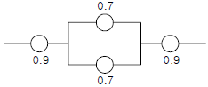
- 0.6261
- 0.7371
- 0.8481
- 0.9591
(정답률: 48%)
29. [그림]과 같은 FT도에서 G1의 발생확률은? (단, G2 = 0.1, G3 = 0.2, G4 = 0.3 의 발생확률을 갖는다.)
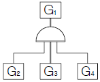
- 0.006
- 0.300
- 0.496
- 0.600
(정답률: 70%)
30. 휴먼에러 중 필요한 task 및 절차를 수행하지 않아 발생하는 에러를 무엇이라 하는가?
- time error
- omission error
- commission error
- extraneous error
(정답률: 50%)
31. [그림]에서 A 는 자극의 불확실성, B 는 반응의 불확실성을 나타낸다. 이 때 C 부분이 나타내는 것은?
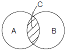
- 전달된 정보량
- 불안전한 행동의 양
- 자극과 반응의 확실성
- 자극과 반응의 검출성
(정답률: 39%)
32. 다음 중 정적자세를 유지할 때 진전(tremor)을 감소시킬 수 있는 방법으로 거리가 먼 것은?
- 시각적인 참조가 있도록 한다.
- 손을 심장 높이가 되도록 유지한다.
- 작업대상물에 기계적 마찰이 있도록 한다.
- 근로자가 떨지 않으려고 힘을 주어 노력한다.
(정답률: 42%)
33. 원자력 산업과 같이 이미 상당한 안전이 확보되어 있는 장소에서 관리, 설계, 생산, 보전 등 광범위하고 고도의 안전달성을 목적으로 하는 시스템 해석방법은?
- ETA
- FHA
- MORT
- FMECA
(정답률: 79%)
34. 다음 중 작업장의 조명 수준에 대한 설명으로 가장 적절한 것은?
- 작업환경의 추천 광도비는 5 : 1 정도이다.
- 천장은 80 ~ 90% 정도의 반사율을 가지도록 한다.
- 작업영역에 따라 휘도의 차이를 크게 한다.
- 실내표면의 반사율은 천장에서 바닥의 순으로 증가시킨다.
(정답률: 54%)
35. 다음 중 점광원에 적용할 때 조도를 나타낸 식으로 옳은 것은?
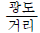
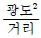
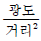
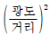
(정답률: 72%)
36. 다음 중 일반적인 수공구의 설계원칙으로 볼 수 없는 것은?
- 손목을 곧게 유지한다.
- 반복적인 손가락 동작을 피한다.
- 사용이 용이한 검지만을 주로 사용한다.
- 손잡이는 접촉면적을 가능하면 크게 한다.
(정답률: 65%)
37. 다음 중 인간 눈에서 빛이 가장 먼저 접촉하는 부위는?
- 각막
- 망막
- 초자체
- 수정체
(정답률: 65%)
38. 다음 중 신뢰도를 구조상으로 직렬구조에 해당되는 것은?
- 3발 자전거의 바퀴
- 건물내의 스프링클러
- 검사인원의 중복 투입
- 자동차의 브레이크 시스템
(정답률: 35%)
39. 다음 중 동작경제의 원칙으로 틀린 것은?
- 동작의 범위는 최대로 할 것
- 동작은 연속된 곡선운동으로 할 것
- 양손은 좌우 대칭적으로 움직일 것
- 양손은 동시에 시작하고 동시에 끝내도록 할 것
(정답률: 55%)
40. 자극들간, 반응들간 혹은 자극과 반응조합의 관계가 인간의 기대와 모순되지 않는 것을 무엇이라 하는가?
- 검출성
- 변별성
- 양립성
- 표준화
(정답률: 46%)
3과목: 건설시공학
41. 혼화제인 AE제가 콘크리트의 물성에 미치는 영향에 대한 설명 중 옳지 않은 것은?
- 동결융해에 대한 저항성이 크게 된다.
- 철근과의 부착강도는 커지는 경향이 있다.
- 시공성이 좋아진다.
- 단위 수량이 적게 된다.
(정답률: 66%)
42. 제자리 콘크리트 말뚝을 시공할 때 목표지점까지 케이싱 튜브(casing tube)로 공벽(孔壁)을 보호하면서 굴착하는 공법은?
- 심초말뚝공법
- 베노토(benoto)말뚝공법
- 어스 드릴(earth drill)말뚝공법
- 리버스 서큘레이션(reverse circulation)말뚝공법
(정답률: 38%)
43. QC의 7대 도구 중 결함부나 기타 시공불량 등 항목을 구분하여 크기순으로 나열한 것으로, 결함항목을 집중적으로 감소시키는데 효과적으로 사용되는 것은?
- 파레토도
- 히스토그램
- 산포도
- 관리도
(정답률: 55%)
44. 다음 중 건축공사의 시공순서로 가장 알맞은 것은?
- 흙막이 및 토공사 - 기초공사 - 방수공사 - 구체공사 - 지붕공사 - 마무리공사
- 흙막이 및 토공사 - 기초공사 - 철근콘크리트공사 - 조적 및 미장공사 - 방수공사 - 지붕공사 - 마무리 공사
- 흙막이 및 토공사 - 기초공사 - 조적 및 미장공사 - 철근콘크리트공사 - 지붕공사 -방수공사 - 마무리 공사
- 기초공사 - 흙막이 및 토공사 - 구체공사 - 미장공사 - 방수공사 - 마무리공사 - 지붕공사
(정답률: 67%)
45. 철근콘크리트공사에서 컨시스턴시(consistency)의 정의로 옳은 것은?
- 반줄질기 여하에 따르는 작업의 난이도 정도 및 재료 분리에 저항하는 정도를 나타내는 굳지 않은 콘크리트의 성질
- 주로 수량의 다소에 따르는 반죽이 되고 진 정도를 나타내는 굳지 않은 콘크리트의 성질
- 거푸집에 쉽게 다져 넣을 수 있고, 거푸집을 제거하면 천천히 변하는 굳지 않은 콘크리트의 성질
- 굵은골재의 최대치수 등에 따르는 마무리하기 쉬운 정도를 나타내는 굳지 않은 콘크리트의 성질
(정답률: 47%)
46. 표준관입시험에 관한 설명 중 옳지 않은 것은?
- 토질시험의 일종이다.
- 추의 무게는 63.5kg 이다.
- N의 값이 작을수록 밀실한 토질이다.
- N의 값은 30cm를 관입하는데 필요한 타격 횟수이다.
(정답률: 61%)
47. 강관말뚝지정에 대한 설명으로 옳지 않은 것은?
- 강한 타격에도 견디며 다져진 중간지층의 관통도 가능하다.
- 중량이 가볍고, 단면적이 작다.
- 이음이 강하며 길이 조절이 용이하다.
- 상부구조와의 결합이 용이하지 않으며 재료비가 저렴하다.
(정답률: 63%)
48. 다음 중 콘크리트 배합을 결정하는데 있어서 직접적으로 관계가 없는 것은?
- 물시멘트비
- 골재의강도
- 단위시멘트량
- 슬럼프값
(정답률: 64%)
49. 기초공사를 하기 위하여 땅을 파는 일을 기초파기 또는 흙파기라 하는데, 흙파기 모양에 따라 구분한 용어가 아닌것은?
- 구덩이파기(pit excavation)
- 줄기초파기(trenching)
- 온통기초파기(overall excavation)
- 탑다운 공법(top-down method)
(정답률: 71%)
50. 토량 6,000m3을 8톤 트럭으로 운반할 때 필요한 트럭 대수는?(단 톤 트럭 1대의 적재량 6m3 이고 트럭은 5회 운행함)
- 120대
- 150대
- 180대
- 200대
(정답률: 62%)
51. 철근콘크리트공사에서 수직 거푸집의 상호간 간격을 유지하는 데 사용하는 것은?
- 박리제(form oil)
- 세퍼레이터(separator)
- 스페이서(spacer)
- 서포트(support)
(정답률: 73%)
52. 단가 도급계약 제도에 대한 설명으로 옳지 않는 것은?
- 시급한 공사인 경우 계약을 간단히 할 수 있다.
- 설계변경으로 인한 수량증감의 계산이 어렵고 일식 도급보다 복잡하다.
- 공사비가 높아질 염려가 있다.
- 총공사비를 예측하기 힘들다.
(정답률: 66%)
53. 내외관을 소정의 깊이까지 박은 후 내관을 빼내고, 외관내에 콘크리트를 투입하여 내관으로 다지면서 점차 외관도 뽑아 올려 콘크리트를 구근형으로 만들어 완성하는 현장 타설 콘크리트 파일은?
- 심플렉스파일
- 컴프레솔파일
- 페테스탈파일
- 레이몬드파일
(정답률: 27%)
54. 철근콘크리트에서 이어붓기 위치로 틀리게 기술된 것은?
- 기둥이음의 기둥은 중간에서 수평으로 한다.
- 아치의 이음은 아치축에 직각으로 설치한다.
- 보, 바닥판 이음은 그 스팬의 중앙 부근에서 수직으로 한다.
- 벽은 개구부 등 끊기 좋은 위치에서 수직 또는 수평으로 한다.
(정답률: 42%)
55. 현장에서 공무적 현장관리가 아닌 것은?
- 자재관리
- 노무관리
- 위험 및 재해방지
- 공정표작성
(정답률: 29%)
56. 다음은 현장용접시 발생하는 재해예방조치를 설명한 것이다. 이 중 화재예방조치와 직접적인 관련성이 가장 작은 것은?
- 용접기의 완전한 접지(earth)를 한다.
- 용접부분 부근의 가연물이나 인화물을 치운다.
- 착의, 장갑, 구두 등을 건조상태로 한다.
- 불꽃이 비산하는 장소에 주의한다.
(정답률: 59%)
57. 철근콘크리트 구조물의 내구성 저하 요인이 아닌 것은?
- 백화(百花)
- 염해
- 중성화
- 동해
(정답률: 59%)
58. 다음 용어에 대한 정의로 틀린 것은?
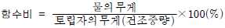
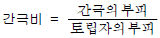
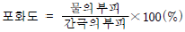
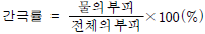
(정답률: 52%)
59. 철골공사의 녹막이칠에 관한 기술 중 옳지 않은 것은?
- 기계깎기 마무리한 면의 녹막이 칠은 그리이스(grease) 칠을 하는 것을 원칙으로 한다.
- 공장가공 후 현장으로 운반하기 전 녹막이칠을 1~2회 정도 한다.
- 콘크리트에 묻히는 부분에는 반드시 녹막이칠을 한다.
- 현장 용접부분은 용접부에서 100mm 이내에 녹막이 칠을 하지 않는다.
(정답률: 63%)
60. 철골공사의 철골부재 용접에서 용접 결함이 아닌 것은?
- 언더컷(under cut)
- 오버랩(overlap)
- 위핑(weeping)
- 블로우홀(blow hole)
(정답률: 67%)
4과목: 건설재료학
61. 타일의 제조공정에서 건식제법에 대한 설명으로 옳지 않은 것은?
- 내장타일은 주로 건식제법으로 제조된다.
- 제조능률이 높다.
- 치수 정도(精度)가 좋다.
- 복잡한 형상의 것에 적당하다.
(정답률: 48%)
62. 대리석의 성질과 용도에 관한 설명 중 옳은 것은?
- 석질이 치밀하고 판석으로서 지붕 외벽 등에 붙이고 비석, 숫돌로 이용된다.
- 석질이 견고하고 조적재, 기초석재, 장식용으로 쓰인다.
- 내화도는 높으나 조잡하여 경량골재, 내화재 등에 사용한다.
- 석질이 치밀하고 열, 산에는 약하지만 미려하므로 장식용으로 사용된다.
(정답률: 55%)
63. 석회암(CaCO3)을 900~1200˚C 정도로 가열 소성하여 얻어지는 것은?
- 소석회
- 생석회
- 무수석고
- 마그네시아 석회
(정답률: 34%)
64. KS에 규정된 1종 포틀랜드 시멘트의 4주 압축강도는?
- 10.8 MPa 이상
- 12.7 MPa 이상
- 19.6 MPa 이상
- 28.4 MPa 이상
(정답률: 61%)
65. 점토제품의 원료와 그 역할이 올바르게 연결된 것은?
- 규석, 모래 - 점성 조절
- 장석, 석회석 - 균열 방지
- 샤모트(chamotte) - 내화성 증대
- 식염, 붕사 - 용융성 조절
(정답률: 22%)
66. 화성암의 일종으로 내구성 및 강도가 크고 외관이 수려하며, 절리의 거리가 비교적 커서 대재를 얻을 수 있으나, 함유광물의 열팽창계수가 달라 내화성이 약한 석재는?
- 안산암
- 사암
- 화강암
- 응회암
(정답률: 65%)
67. 강을 800~1000˚C로 가열하여 그 온도에서 수십분 간 보존한 후 대기 중에서 서서히 냉각하는 열처리로 조직을 개선하고 결정을 미세화하기 위해 실시하는 것은?
- 불림
- 풀림
- 담금질
- 뜨임질
(정답률: 16%)
68. 다음의 각종 미장재료에 대한 설명 중 틀린 것은?
- 회반죽 바름은 수경성 재료이며 소석회에 물과 풀을 넣고 여물을 섞어 바른다.
- 질석모르타르는 질석을 모르타르에 혼합한 것으로 내화피복용 바름재로 쓰인다.
- 돌로마이트 플라스터는 기경성 재료이며 건조수축이 크다.
- 석고 플라스터는 소석고를 주성분으로 한다.
(정답률: 46%)
69. 다음 중 건축재료로 쓰이는 알루미늄에 대한 설명으로 옳은 것은?
- 열ㆍ전기전도성이 우수하다.
- 가공성이 나빠서 복잡한 형상의 제작이 곤란하다.
- 내화성이 크다.
- 산, 알칼리 등에 강해서 콘크리트용으로 적합하다.
(정답률: 48%)
70. 건축용 접착제에 기본적으로 요구되는 성능과 가장 관계가 먼 것은?
- 경화시 체적수축 등의 변형을 일으키지 않을 것
- 취급이 용이하고 사용시 유동성이 없을 것
- 장기 하중에 의한 크리프가 없을 것
- 진동, 충격의 반복에 잘 견딜 것
(정답률: 47%)
71. 다음 중 보통 콘크리트용 쇄석의 원석으로 가장 부적당한 것은?
- 현무암
- 안산암
- 화강암
- 응회암
(정답률: 40%)
72. 목재에 관한 설명 중 옳지 않은 것은?
- 활엽수는 일반적으로 침엽수에 비해 단단한 것이 많아 경재(硬材)라 부른다.
- 인장강도는 응력방향이 섬유방향에 수직인 경우에 최대가 된다.
- 불에 타는 단점이 있으나 열전도도가 아주 낮아 여러가지 보온재료로 사용된다.
- 섬유포화점 이상의 함수상태에서는 함수율의 증감에도 불구하고 신축을 일으키지 않는다.
(정답률: 26%)
73. 굳지 않은 콘크리트의 성질을 나타내는 용어로서 콘크리트 타설 작업의 난이도 정도 및 재료의 분리에 저항하는 정도를 나타내는 것은?
- 워커빌리티(workability)
- 컨시스턴시(consistency)
- 플라스티시티(plasticity)
- 펌퍼빌리티(pumpability)
(정답률: 45%)
74. 블로운 아스팔트의 성능을 개량하기 위해 동식물성 유지와 광물질 분말을 혼입하여 제작한 것은?
- 아스팔트 프라이머
- 아스팔트 컴파운드
- 아스팔트 코팅
- 아스팔트 에멀젼
(정답률: 43%)
75. 다음 중 프리팩트 콘크리트에서 주입용 모르타르에 쓰이는 모래의 조립률(FM값)로 가장 알맞은 것은?
- 0.7 ~ 1.2
- 1.4 ~ 2.2
- 2.3 ~ 3.7
- 3.8 ~ 4.0
(정답률: 39%)
76. 집성목재에 대한 설명 중 옳지 않은 것은?
- 옹이, 균열 등의 각종 결점을 제거하거나 이를 적당히 분산시켜 되도록 균질한 조직의 인공목재를 제조 할 수 있다.
- 보, 기둥, 아치, 트러스 등의 구조재료로 사용할 수 있다.
- 직경이 작은 목재들을 접착하여 장대재(長大材)로 활용할 수 있으므로 자원을 절약할 수 있다.
- 소재를 약제처리 후 집성접착하므로 양산이 어려우며 건조균열 및 변형 등을 피할 수 없다.
(정답률: 60%)
77. 목재의 건조목적이 아닌 것은?
- 목재의 강도 증진
- 도료, 주입제 및 접착제의 효과 증대
- 균류 발생의 방지
- 수지낭(resin pocket)과 연륜의 제거
(정답률: 60%)
78. 철강제품 중에서 내식성, 내마모성이 우수하고 강도가 높으며, 장식적으로도 광택이 미려한 Cr-Ni 합금의 비자성강(鋼)은?
- 스테인리스강
- 탄소강
- 주철
- 주강
(정답률: 78%)
79. 합성수지와 그 용도의 조합으로 부적당한 것은?
- 멜라민수지 - 테이블용
- 아크릴수지 - 도어(door)용
- 폴리에스테르수지 - 타일용
- 폴리스티렌수지 - 단열용
(정답률: 36%)
80. 플라이애쉬를 혼입한 콘크리트의 특성에 관한 설명 중 올바른 것은?
- 동일한 워커빌리티를 가진 보통콘크리트보다 많은 단위수량을 필요로 한다.
- 동일한 보통콘크리트보다 중성화 속도가 느리다.
- 플라이애쉬를 사용한 콘크리트는 화학저항성이 증대 된다.
- 초기강도는 증가되지만 장기강도에는 큰 영향을 미치지 않는다.
(정답률: 50%)
5과목: 건설안전기술
81. 압밀에 대한 설명으로 옳지 않은 것은?
- 압밀이란 흙의 간극 속에서 물이 배수됨으로써 오랜 시간에 걸쳐 압축되는 현상을 말한다.
- 압밀시험의 목적은 지반의 침하 속도와 침하량을 추정해서 설계 시공의 자료를 얻는데 있다.
- 일반적으로 점토는 투수계수가 작아 압밀이 장시간에 걸쳐 일어나나, 간극비가 작아 침하량은 작다.
- 압밀이 완료되면 과잉간극수압(Ue)은 0 이 된다.
(정답률: 58%)
82. 다음 중 터널굴착 작업시 시공계획의 내용이 아닌 것은?
- 터널굴착방법
- 터널지보공 및 복공의 시공방법과 용수처리방법
- 자동경보장치의 설치방법
- 환기 또는 조명시설을 하는 때에는 그 방법
(정답률: 52%)
83. 건설현장에서 거푸집 동바리를 조립할 때 준수 사항으로 틀린 것은?
- 동바리의 이음은 맞댄이음 또는 장부이음으로 할 것
- 깔목의 사용, 콘크리트 타설, 말뚝박기 등 동바리의 침하방지 조치를 할 것
- 동바리로 사용하는 강관(파이프서포트는 제외)은 높이 3미터 이내마다 수평연결재를 3개 방향으로 설치할 것
- 강재와 강재와의 접속부 및 교차부는 볼트, 클램프 등 전용철물을 사용하여 연결할 것
(정답률: 59%)
84. 차량계 건설기계를 사용하여 작업을 하는 때에 건설기계의 전도 또는 전락에 의한 근로자의 위험을 방지하기 위하여 사업주가 취하여야 할 조치사항으로 적당하지 않은 것은?
- 도로폭의 유지
- 지반의 부동침하방지
- 울, 손잡이 설치
- 갓길의 붕괴방지
(정답률: 67%)
85. 산업안전기준에 관한 규칙에 따른 근로자의 안전한 행동을 위하여 통로에 설치하여야 하는 조명시설의 조도는?
- 30럭스 이상
- 75럭스 이상
- 150럭스 이상
- 300럭스 이상
(정답률: 84%)
86. 개착식 굴착공사의 흙막이공법 중 버팀보공법을 적용하여 굴착할 때 지반붕괴를 방지하기 위하여 사용하는 계측장치로 거리가 먼 것은?
- 지하수위계
- 경사계
- 록볼트응력계
- 변형률계
(정답률: 52%)
87. 표준안전작업지침에 의하면 인력굴착 작업시 굴착면이 계단식 굴착을 할 때 소단의 폭은 수평거리 얼마정도로 하여야 하는가?
- 1m
- 1.5m
- 2m
- 2.5m
(정답률: 15%)
88. 항타기 또는 항발기를 조립할 때 점검하여야 하는 사항과 거리가 먼 것은?
- 권상기의 설치상태의 이상 유무
- 본체 연결부의 풀림 또는 손상의 유무
- 이동 제동장치 기능의 이상 유무
- 권상장치의 브레이크 및 쐐기장치 기능의 이상 유무
(정답률: 39%)
89. 거푸집동바리의 조립 또는 해체작업시 준수사항으로 틀린 것은?
- 보, 슬래브 등의 거푸집동바리 등을 해체할 때에는 낙하, 충격에 의한 돌발 재해를 방지하기 위하여 버팀목을 설치하는 등의 조치를 할 것
- 공구 등을 올리거나 내릴 때에는 달줄, 달포대 등을 사용할 것
- 비ㆍ눈 그 밖의 기상상태의 불안정으로 날씨가 몹시 나쁠 때 작업을 중지시킬 것
- 크레인 등 양중기로 철근을 운반할 경우에는 중앙의 1개소 이상을 묶어 수평으로 운반할 것
(정답률: 70%)
90. 자재 등의 물체 투하에 투하설비를 설치하거나 감시인을 배치하는 등의 조치를 취하여야 하는 최소 높이는 얼마 이상부터인가?
- 2m
- 3m
- 4m
- 5m
(정답률: 64%)
91. 가설 통로 중 경사로의 설치 기준으로 틀린 것은?
- 경사로의 폭은 최소 90cm 이상이어야 한다.
- 발판 폭은 40cm 이상이어야 한다.
- 비탈면의 경사각은 30° 이내이어야 한다.
- 경사로의 지지 기둥은 5m 이내로 설치한다.
(정답률: 60%)
92. 통나무 비계는 지상높이 4층 이하 또는 몇 m 이하인 건축물ㆍ공작물 등의 건조ㆍ해체 및 조립 등 작업에서만 사용하여야 하는가?
- 5m
- 12m
- 15m
- 20m
(정답률: 63%)
93. 달비계에 설치되는 작업발판의 폭에 대한 기준으로 옳은 것은?
- 20cm 이상
- 40cm 이상
- 60cm 이상
- 80cm 이상
(정답률: 60%)
94. 그림과 같이 무게 500kg의 화물을 인양하려고 한다. 이때 와이어로프의 1가닥에 작용되는 장력(T)는 약 얼마인가?
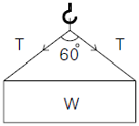
- 500kg
- 357kg
- 289kg
- 144kg
(정답률: 40%)
95. 채석작업시 붕괴 또는 낙하에 의해 근로자에게 위험의 우려가 있을 때 설치해야 하는 것은?
- 건널다리
- 천막덮개
- 손잡이
- 방호망
(정답률: 63%)
96. 히빙(heaving)현상이 잘 발생하는 토질 지반은?
- 연약한 점토 지반
- 연약한 사질토 지반
- 견고한 점토 지반
- 견고한 사질토 지반
(정답률: 64%)
97. 와이어로프나 철선 등을 이용하여 상부지점에서 작업용 발판을 매다는 형식의 비계로서 건물 외벽도장이나 청소 등의 작업에서 사용되는 비계는?
- 브라켓 비계
- 달비계
- 이동식 비계
- 말비계
(정답률: 75%)
98. 지면을 절삭하여 평활하게 다듬는 장비로서 노면의 성형과 정지작업에 가장 적당한 장비는?
- 모터 그레이더
- 백호
- 트랜처
- 크램쉘
(정답률: 52%)
99. 콘크리트 거푸집을 설계할 때 고려해야 하는 연직하중으로 거리가 먼 것은?
- 작업하중
- 콘크리트 자중
- 충격하중
- 풍하중
(정답률: 65%)
100. 높이 2m 이상인 작업발판의 끝이나 개구부 등에서 추락을 방지하기 위한 설비로 가장 거리가 먼 것은?
- 안전난간
- 덮개
- 방호선반
- 울타리
(정답률: 47%)